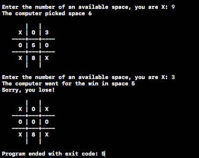

For my final project in Computer Science I, I wrote a program for a Tic Tac Toe game that the user plays on the console. The interesting and challenging part of this project was the inclusion of a computer player that the user plays against, and tries to beat as the computer player uses simple strategies to try to beat the user. For instance, the computer will recognize when two of its markers are in a row and will place the third marker in the row to beat the game. This program was written in C, and the source code for this project can be found on my GitHub account.
© 2016 Tyler Coverstone. All Rights Reserved.